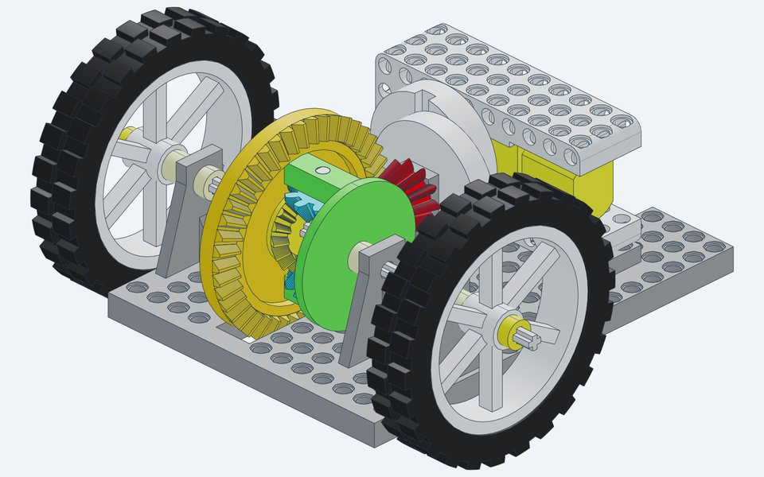

Rigid Shaft Drives · Couplings
剛性傳動
用剛性零件把一根軸的轉動直接傳到另一根軸：聯軸器、萬向接頭都屬於這一類。兩根軸實際上很難完全對準，所以選用時要看它能補償哪一種偏差、能不能維持等速。
常見種類
- 剛性聯軸器（Rigid Coupling：套筒 Sleeve、凸緣 Flange）：兩軸鎖成一體，最簡單、沒有背隙，但兩軸必須精確對心；聯軸器種類與選用 →
- 爪式／梅花聯軸器（Jaw / Spider Coupling）：兩個爪形輪轂中間夾彈性墊，可吸震、容許少量偏差
- 十字滑塊聯軸器（Oldham Coupling）：中間滑塊兩面各有一條互相垂直的凸條，補償兩軸平行偏移，轉速完全 1:1；原理與互動模擬 →
- 萬向接頭（Universal Joint / Hooke's Joint）：十字軸加兩個叉子，兩軸可以夾一個角度，但單個接頭的輸出轉速會忽快忽慢；不等速分析與互動模擬 →
- 等速萬向接頭（CV Joint：球籠式 Rzeppa、三叉式 Tripod）：大角度也能等速，前輪驅動車的半軸都用它；介紹 →
- 精密撓性聯軸器（Bellows、Beam、Disc）：靠金屬本身微量彎曲補償偏差，沒有背隙，用在編碼器、步進馬達接導螺桿
兩軸的三種偏差：徑向偏移（兩軸平行但錯開）、角度偏差（兩軸夾一個角）、軸向位移（前後竄動）。十字滑塊專門處理徑向偏移，萬向接頭專門處理角度偏差；兩者都只靠剛性零件滑動或轉動，不像皮帶、鏈條那樣靠零件本身彎曲（見撓性運動）。
生活中的應用
主題與模型
聯軸器種類與選用Coupling Selection
- 三種偏差：徑向、角度、軸向（示意圖）
- 10 種聯軸器比較表：能補償什麼、是否等速、有無背隙
- 選用流程與 3D 列印／LEGO 小車建議
萬向接頭Universal Joint
- 不等速公式：ω₂/ω₁ = cos β ÷ (1 − sin²β cos²θ₁)
- 雙萬向接頭怎麼排才會抵消（Z 型、W 型）
- 等速接頭：球籠式、三叉式；互動 3D 模擬可調夾角
十字滑塊聯軸器Oldham Coupling
- 泰勒斯定理：滑塊中心沿以偏移量為直徑的圓、以 2 倍轉速公轉
- 為什麼轉速永遠 1:1；滑動行程、離心力與設計要點
- 互動模擬可調偏移量與轉速

模型：差速器＋十字滑塊聯軸器＋TT 馬達3D Printed
- TT 馬達軸和差速器輸入軸平行錯開 12 mm
- 3 件自印：D 孔輪轂、方形滑塊、十字孔輪轂；總長 21.7 mm、Ø40
- 3D 組裝與運轉動畫、2 盤列印檔在 3D 列印作品集

模型：萬向接頭教學模組3D Printed
- TT 馬達與小齒輪軸平行錯開 23.5 mm，雙萬向 Z 型
- 指針盤 ×3、叉子可換相位、4 種夾角、手搖曲柄
- 3D 動畫可切換夾角與相位，即時畫出速度比